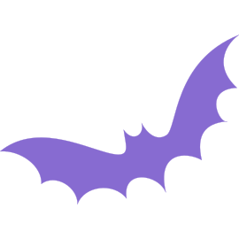
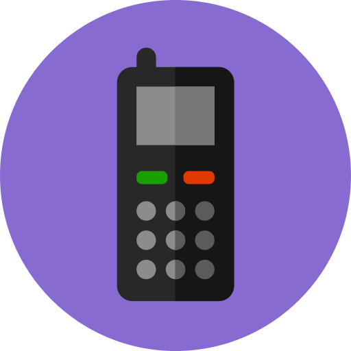
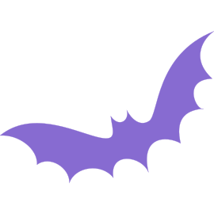
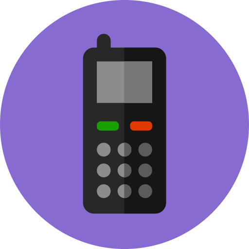

Vraag 1: Slaap…
Vraag 2: Lang uitslapen in het weekend…
Vraag 3: Slaap jij makkelijk in?
Vraag 4: Ochtendmodus:
Vraag 5: Overdag
Vraag 6: Screen addict or angel?
Jij bent een... {{result}}!

 





{{resultNote}}
Hier zijn enkele tips voor jou:
Terecht dat je gek bent op slaap! Slaap is de max. Bovendien heeft het een hele hoop voordelen voor je! Je kan je beter concentreren, hebt een beter humeur, je bent weerbaarder tegen ziektes,… Bovendien leef je op termijn ook gezonder! Slaaptekort verhoogt namelijk je kansen op het krijgen van diabetes, overgewicht en hartziektes op latere leeftijd. Sleep on!
Voldoende slaap heeft een hele hoop voordelen heeft voor je! Je kan je beter concentreren, hebt een beter humeur, je bent weerbaarder tegen ziektes,… Bovendien leef je op termijn ook gezonder! Slaaptekort verhoogt namelijk je kansen op het krijgen van diabetes, overgewicht en hartziektes op latere leeftijd. Sleep on!
Denk er aan dat voldoende slaap een hele hoop voordelen heeft voor je! Je kan je beter concentreren, hebt een beter humeur, je bent weerbaarder tegen ziektes,… Bovendien leef je op termijn ook gezonder! Slaaptekort verhoogt namelijk je kansen op het krijgen van diabetes, overgewicht en hartziektes op latere leeftijd. Try it!
Uitslapen is fijn, dat weet iedereen… toch is het jammer genoeg niet zo goed voor je slaappatroon, je brengt het namelijk helemaal in de war waardoor je daarna terug moeilijker kan inslapen. Bovendien zijn de uren die je in de voormiddag bijslaapt, vaak niet zo productief; je lichaam is immers al in ‘dagmodus’ waardoor je enkel licht slaapt. Die lichte slaap zorgt ervoor dat je vaak een stuk groggy-er wakker wordt! Probeer in het weekend niet langer dan 2 uren later op te staan dan het uur waarop je tijdens de week opstaat.
Super dat je steeds op regelmatige tijdstippen opstaat, houden zo! Regelmaat zorgt er voor dat je steeds makkelijk kan inslapen.
Uitslapen is fijn, dat weet iedereen… toch is het goed om je slaappatroon zo regelmatig mogelijk te houden. Uitslapen zorgt er immers voor dat dit patroon in de war geraakt en je ’s avonds moeilijker in slaapt valt. Bovendien zijn de uren die je in de voormiddag bijslaapt, vaak niet zo productief; je lichaam is immers al in ‘dagmodus’ waardoor je enkel licht slaapt.
Piekeren in bed is niet fijn. Neem ruim voor je gaat slapen even de tijd om je ‘zorgen’ even op papier te zetten. Zo kan je die letterlijk aan de kant schuiven wanneer je gaat slapen!
Voor je gaat slapen is het belangrijk dat je lichaam tot rust komt. Een slaapritueel kan hierbij helpen: het geeft immers het signaal aan je lichaam dat het tijd is om rustig te worden!
Wanneer je je ’s ochtends een echte zombie voelt is de kans groot dat je te weinig slaapt. Probeer er wat vroeger in te kruipen!
Wanneer je je overdag steeds vermoeid voelt en op elk moment zou kunnen slapen, wijst dit er op dat je te weinig slaapt. Probeer wat meer slaap te halen!
Denk er aan dat schermgebruik ’s avonds af te raden is om verschillende redenen: 1) het blauwe licht van je scherm zorgt ervoor dat de aanmaak van het slaaphormoon geremd wordt, waardoor je moeilijker inslaapt en minder diep slaapt. 2) het is verslavend, het houdt je langer wakker dan nodig 3) het geeft je enorm veel extra prikkels, waardoor je niet tot rust kan komen om te slapen.
Super dat je verstandig om gaat met schermen ’s avonds. Is het soms moeilijk om aan de verleiding te weerstaan? Zorg dat je schermen buiten handbereik liggen! Nog beter is ze buiten je kamer leggen natuurlijk ☺